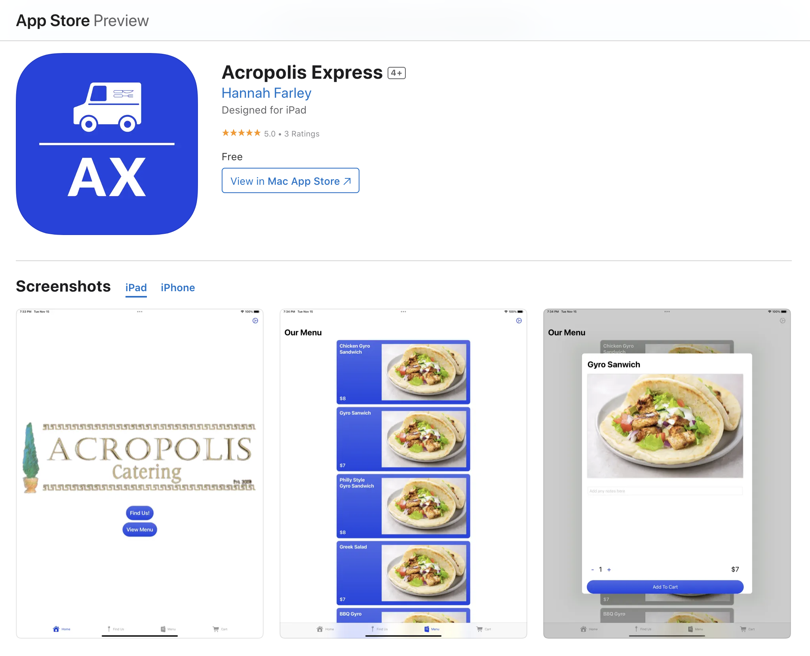

Earlier Projects
Student projects from Vanderbilt University
Lead Developer | Active & Ongoing

Amplify is an open-source enterprise generative AI platform built for higher education. What began as a question - can we give universities the ChatGPT experience without per-user subscription costs? - is now a nationwide reality. Amplify is deployed at Vanderbilt University (18,000+ users, $3/user/month average) and a growing community of universities across the United States, giving them full LLM access: AI assistants, agentic workflows, Office 365 integrations, file handling, and API access to models - all within a secure, cost-controlled environment built for academic use.
As a lead developer, I architected and implemented core features including memory systems, a novel RAG Fusion system, API integrations, artifact generation, and admin monitoring tools. I work alongside Jules White and a small team of engineers at Vanderbilt's Amplify Generative AI Innovation Center.
Developer | Active & Ongoing
Majk is an agentic desktop application that enables university staff and researchers to accomplish real tasks using AI - through prompting alone. While Amplify handles chat and assistants, Majk goes further: it coordinates specialized AI agents running in parallel to deliver finished work products, not just responses. Think of it as having a full AI team that picks up a task, works through it autonomously, and hands back a completed output.
Majk is designed for non-developers. It has all the power of a tool like Claude Code but with an interface built for university operations - helping staff do complex work, build AI workflows, and develop AI-powered applications without writing a line of code. Built at Vanderbilt's Amplify Generative AI Innovation Center as the appetite for agentic AI grew beyond what chat interfaces could handle.
Student projects from Vanderbilt University
Senior CS Capstone | Team of 4 | 2nd Place, Vanderbilt Immersion CS Competition

A RateMyProfessor-style course review platform for Vanderbilt University, built for my Senior Computer Science Capstone. Students can review courses, share feedback, and browse others' reviews to make informed enrollment decisions. Placed 2nd in the Vanderbilt Immersion Computer Science Competition.
Stack: JavaScript, Node.js, Firebase
Principles of Software Engineering | Team of 4 | Published on App Store

A full-featured iOS ordering app for a local food truck, built for my Principles of Software Engineering course. Customers can view the menu, place orders, pay, and check hours and location. Employees manage orders and update operational info - all in real time.
Stack: Swift, SwiftUI, Xcode, Firebase